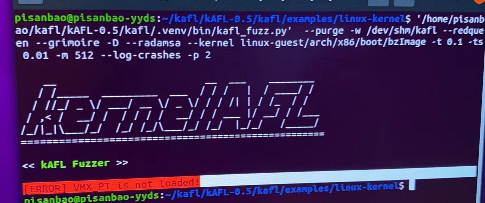
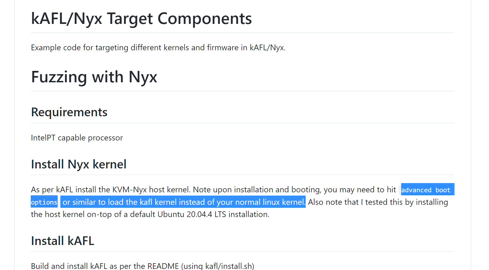
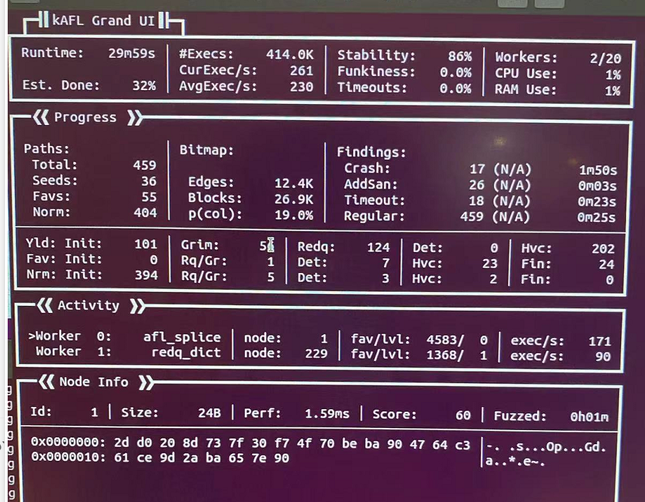

kafl使用
每周学习，用于督促下班后好好把握自由时间来学习。
安装教程见上文
使用
https://github.com/Kharos102/kafl.targets
(这个链接是大佬总结的各种操作系统的使用demo)
https://github.com/IntelLabs/kafl.targets/tree/master/linux-kernel
(官方的linuxkernel教程)
先按照教程试了下linux-kernel的没啥问题
遇到的一些坑讲一下

VMX_PT is not loaded!
这种情况重启电脑进advance setting，选那个kafl的kernel
//当时在bios里找了半天，明明vmx打开了。以为pt是另外一个单独功能整半天没找着

链接里的readme也特别提到了这个。
其余的按照教程走就行了

接下去是windows使用
demo里给了教程，一个windows的driver自己编译后设置开机自启，我这边windows先打开了测试模式防止签名验证
bcdedit -set {default} TESTSIGNING on
还有就是fuzzer的test case在Ubuntu里编译一下，正常情况下会报错，命令行参数除了-lntdll还要加个-lpsapi.
//后续，建议大家看intel官方的https://github.com/IntelLabs/kafl.targets，这个就不需要那么麻烦了。
接下去同样吧testcase设置开机自启然后吧镜像转换成qcow2格式。
这边建议虚拟机在安装前设置单个vmdk文件，省的一堆事，如果按照默认分为多个也没问题，自己克隆出来状态然后
vmware-vdiskmanager.exe -r "G:\win10\windows-10-cl1.vmdk" -t 0 G:\fuck.vmdk
接着跑就完事了。